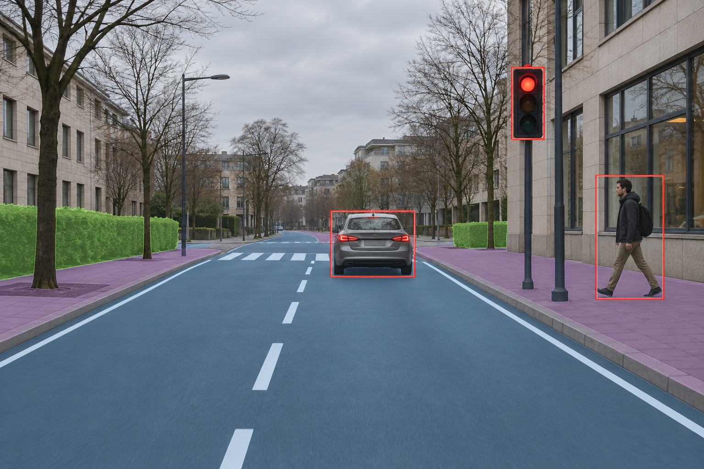

PORTFOLIO / 01 Research & knowledge
R&D.
Articles.
Explore our research and development work alongside tutorials, reviews, and explainers.
XAI for Dummies
A plain-language guide to what Explainable AI is, what an explanation can reveal, and where explanations can mislead us.Shankaranarayan NClustering Techniques to Optimize Railway Daily Path Utilization for Non-Daily Trains
A clustering-based method groups weekly non-daily trains into representative daily paths to improve timetable utilization and expose available capacity.Satwik RamsettiRationalized Timetabling Using a Simulation Tool: A Paradigm Shift in Indian Railways
A case study documents how a customized rail-traffic simulation tool supported a major timetable exercise across India's Golden Quadrilateral and Diagonals.Satwik Ramsetti
Multi-Branch Deep Neural Model for Natural Language-Based Vehicle Retrieval
A vision-language retrieval model combines vehicle appearance, surroundings, and direction to find a vehicle from a natural-language description.Shankaranarayan NA Novel Approach for Real-Time Vehicle Re-Identification Using Content-Based Image Retrieval with Relevance Feedback
A computationally efficient vehicle re-identification approach combines deep features, image retrieval, and relevance feedback to improve ranking quality.Shankaranarayan NDeep Vision-Based Vehicle Retrieval for Automated Smart Traffic Surveillance Systems
A computer-vision study of vehicle retrieval for smart traffic surveillance, published at ICCAKM 2022.Shankaranarayan NNo work matches these filters. Try another combination.